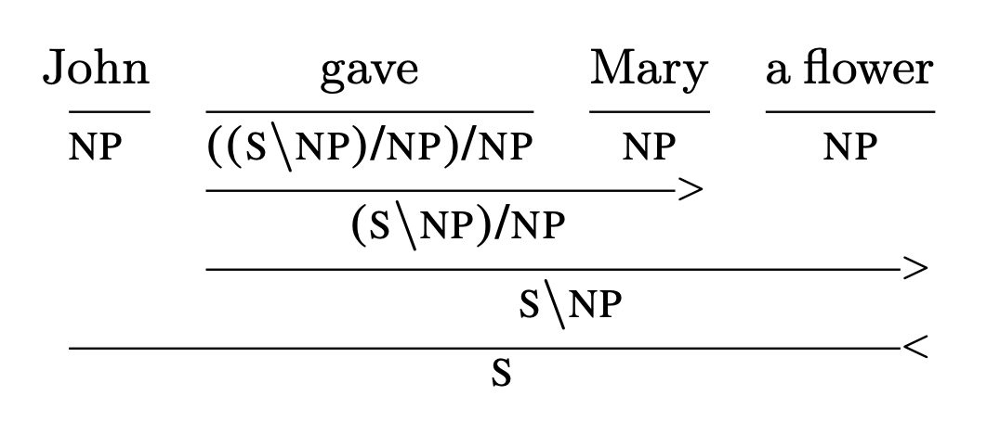

Step 1. Sentence input¶
The first part of the process in lambeq given a sentence, is to convert it into a string diagram, according to a given compositional scheme. lambeq can accommodate any compositional model that can encode sentences as string diagrams, its native data structure. The toolkit currently includes a number of compositional models, using various degrees of syntactic information: bag-of-words models do not use any syntactic information, word-sequence models respect the order of words, while fully syntax-based models are based on grammatical derivations provided by a parser.
Pre-processing and tokenisation¶
Depending on the form of your data, some preprocessing steps may be required to make it appropriate for lambeq use. Section Text pre-processing in the NLP-101 tutorial provides more information about this. Here we will mainly talk about tokenisation, which is crucial in getting correct derivations from the Bobcat parser.
The term tokenisation refers to the process of breaking down a text or sentence into smaller units called tokens. In lambeq these tokens correspond to words, since the parser needs to know exactly what kind of words or symbols and punctuation marks are included in the sentence in order to provide an accurate grammatical analysis.
By default, Bobcat parser assumes that every sentence is delimited by a whitespace, as below:
"John gave Mary a flower"
Note however that when working with raw text, this is rarely the case. Consider for example the sentence:
"This sentence isn't worth £100 (or is it?)."
A naïve tokenisation based on white spaces would result in the following list of tokens:
["This", "sentence", "isn't", "worth", "£100", "(or", "is", "it?)."]
missing, for example, that “isn’t” represents actually two words and “(or” is not a proper word.
In lambeq, tokenisation is provided through the Tokeniser class hierarcy, and specifically by using the SpacyTokeniser class, based on the popular NLP package SpaCy. Here is an example:
[1]:
from lambeq import SpacyTokeniser
tokeniser = SpacyTokeniser()
sentence = "This sentence isn't worth £100 (or is it?)."
tokens = tokeniser.tokenise_sentence(sentence)
tokens
[1]:
['This',
'sentence',
'is',
"n't",
'worth',
'£',
'100',
'(',
'or',
'is',
'it',
'?',
')',
'.']
We can then pass the list of the tokens to the parser, setting the tokenised argument of the sentence2diagram() method to True.
[2]:
from lambeq import BobcatParser
parser = BobcatParser(verbose='suppress')
diagram = parser.sentence2diagram(tokens, tokenised=True)
diagram.draw(figsize=(23,4), fontsize=12)

Note
More details about DisCoCat and syntax-based models will follow below.
To tokenise many sentences at once, use the tokenise_sentences() method:
[3]:
sentences = ["This is a sentence.", "This is (another) sentence!"]
tok_sentences = tokeniser.tokenise_sentences(sentences)
tok_sentences
[3]:
[['This', 'is', 'a', 'sentence', '.'],
['This', 'is', '(', 'another', ')', 'sentence', '!']]
Finally, lambeq provides tokenisation at the sentence-level:
[4]:
text = "I love pizza. It is my favorite food. I could eat it every day!"
sentences = tokeniser.split_sentences(text)
sentences
[4]:
['I love pizza.', 'It is my favorite food.', 'I could eat it every day!']
Note
To simplify the rest of this tutorial, all sentences in the following sections will be delimited by white spaces, so that the parser can tokenise them properly without extra handling.
Syntax-based model: DisCoCat¶
In order to obtain a DisCoCat-like output, we first use the BobcatParser class from text2diagram package, which, in turn, calls the parser, obtains a CCG derivation for the sentence, and converts it into a string diagram. The code below uses the default Bobcat parser in order to produce a string diagram for the sentence “John walks in the park”.
Note
lambeq’s string diagrams are objects of the class lambeq.backend.grammar.Diagram.
[5]:
from lambeq import BobcatParser
sentence = 'John walks in the park'
# Parse the sentence and convert it into a string diagram
parser = BobcatParser(verbose='suppress')
diagram = parser.sentence2diagram(sentence)
diagram.draw(figsize=(14,3), fontsize=12)
Note
Recall from previous section that when the input to sentence2diagram() method is a list of tokens, you should also set tokenised argument to True (by default is set to False).
Another case of syntax-based models in lambeq is tree readers, which will be presented later in this tutorial.
Bag-of-words: Spiders reader¶
DisCoCat is not the only compositional model that lambeq supports. In fact, any compositional scheme that manifests sentences as string diagrams/tensor networks can be added to the toolkit via the readers of the text2diagram package. For example, the spiders_reader object of the LinearReader class represents a sentence as a “bag-of-words”, composing the words using a spider (a commutative operation).
[6]:
from lambeq import spiders_reader
# Create string diagrams based on spiders reader
spiders_diagram = spiders_reader.sentence2diagram(sentence)
# Not a pregroup diagram, we can't use grammar.draw()
spiders_diagram.draw(figsize=(13,6), fontsize=12)
Word-sequence models: Cups and stairs readers¶
The LinearReader class can be used to create any kind of model where words are composed in sequence, from left to right. For example, the cups_reader instance of this class generates a “tensor train”.
[7]:
from lambeq import cups_reader
# Create string diagrams based on cups reader
cups_diagram = cups_reader.sentence2diagram(sentence)
cups_diagram.draw(figsize=(12,2), fontsize=12)
Note the use of a START symbol in the beginning of the sentence, represented as an order-1 tensor (a vector). This ensures that the final result of the computation (that is, the representation of the sentence) will be again a tensor of order 1.
Another pre-made word-sequence model is provided by the stairs_reader instance. This model combines consecutive words using a box (“cell”) in a recurrent fashion, similarly to a recurrent neural network.
[8]:
from lambeq import stairs_reader
stairs_diagram = stairs_reader.sentence2diagram(sentence)
stairs_diagram.draw(figsize=(12,5), fontsize=12)
Tree readers¶
A CCG derivation follows a biclosed form [YK2021] , which can be directly interpreted as a series of compositions without any explicit conversion into a pregroup form. Class TreeReader implements a number of compositional models by taking advantage of this fact. In order to demonstrate the way they work, it would be useful to first examine how a CCG diagram looks like:

Even without knowing the specifics of CCG syntax, it is not difficult to see that the verb “gave” is first composed with the indirect object “Mary”, then the result is composed with the noun phrase “a flower” which correspond to the direct object, and finally the entire verb phrase “gave Mary a flower” is further composed with the subject “John” to return a sentence. A TreeReader follows this order of composition, as demonstrated below.
[9]:
from lambeq import TreeReader
reader = TreeReader()
sentence = "John gave Mary a flower"
tree_diagram = reader.sentence2diagram(sentence)
tree_diagram.draw(figsize=(12,5), fontsize=12)
Note that in this default call, composition is handled by a single “cell” named UNIBOX. This can be changed by passing an explicit argument of type TreeReaderMode to the reader’s constructor. There are three possible choices:
NO_TYPEis the default, where all compositions are handled by the sameUNIBOXcell (above diagram).RULE_ONLYcreates a different cell for each CCG rule.RULE_TYPEcreates a different cell for each (rule, type) pair.
For example:
[10]:
from lambeq import TreeReader, TreeReaderMode
reader = TreeReader(mode=TreeReaderMode.RULE_ONLY)
sentence = "John gave Mary a flower"
tree_diagram = reader.sentence2diagram(sentence)
tree_diagram.draw(figsize=(12,5), fontsize=12)
In the above, each unique CCG rule gets its own box: FA boxes correspond to forward application, and BA boxes to backward application. For certain tasks, making the composition box rule-specific might lead to better generalisation and overall performance.
See also: